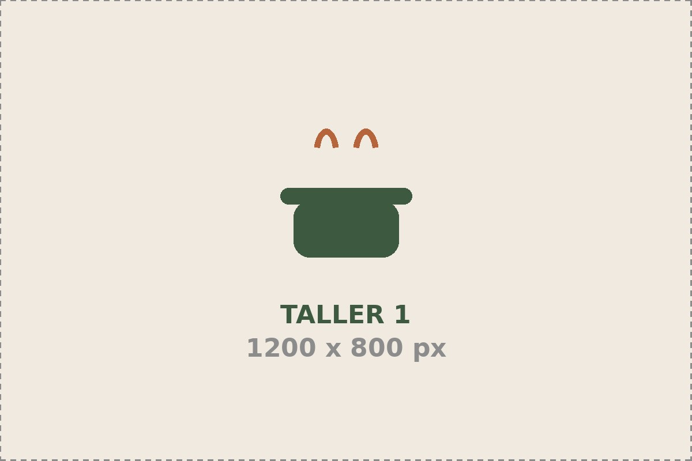
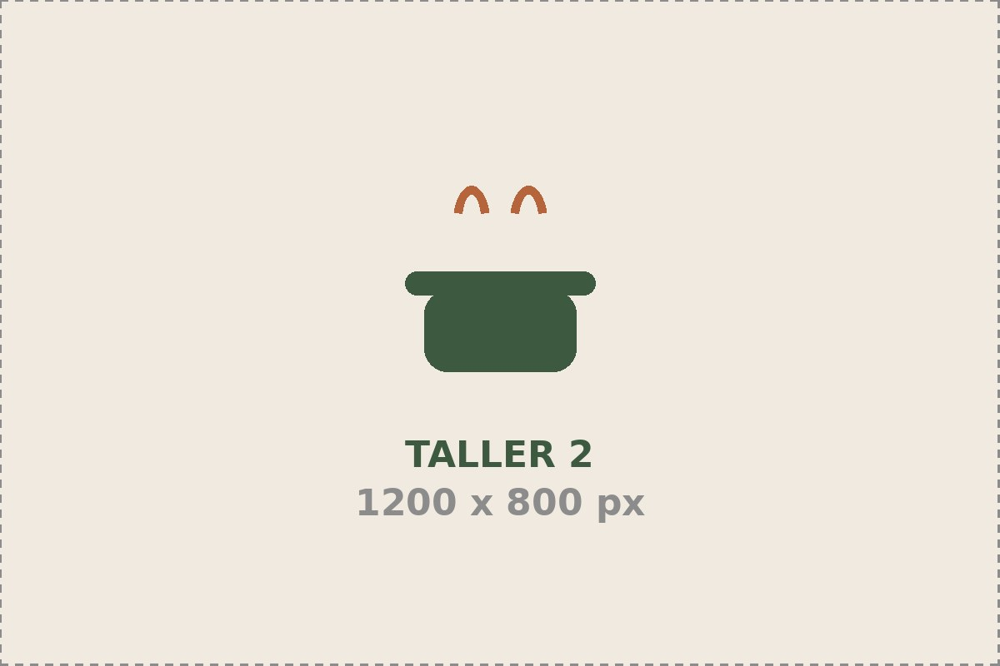
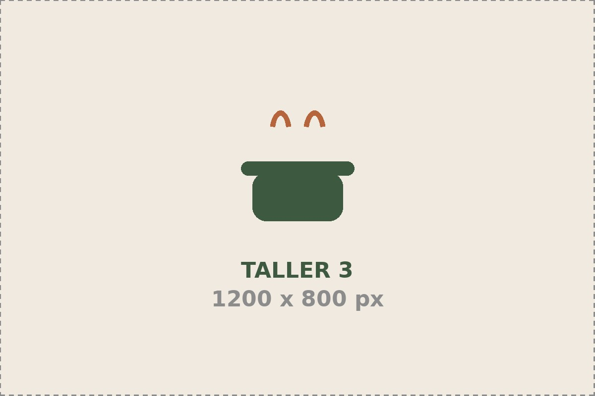
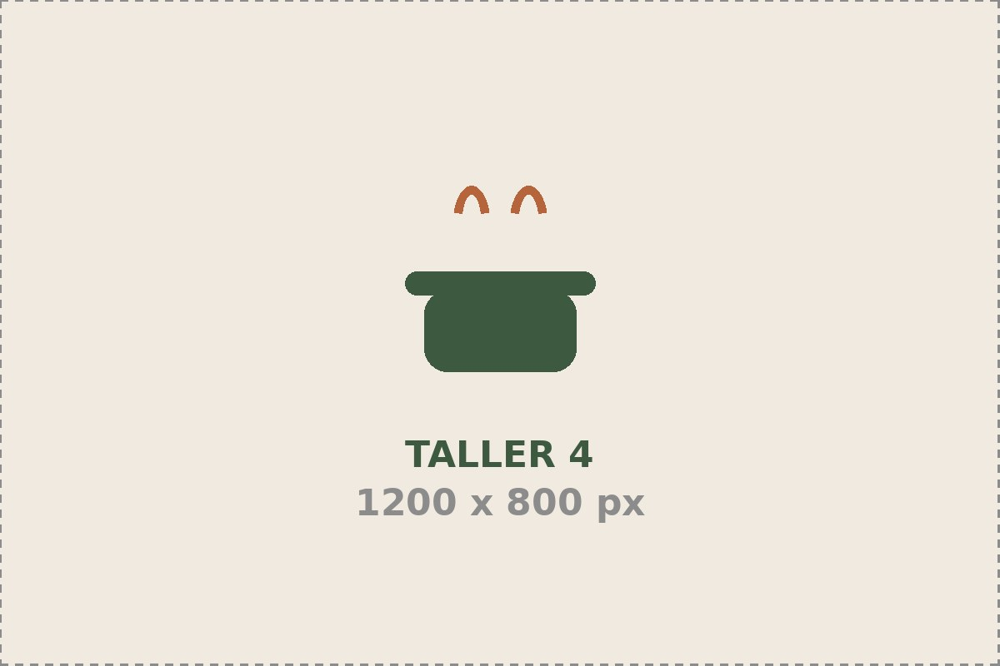

Cocina de la casa
Recetas tradicionales costarricenses: olla de carne, picadillos, tamal asado y arroz con leche.
4 sesiones · ₡68 000
Talleres presenciales de cocina costarricense, panadería y repostería, en grupos de ocho personas.
Ver los talleresCada taller incluye los insumos, el recetario impreso y la degustación de lo preparado.
Recetas tradicionales costarricenses: olla de carne, picadillos, tamal asado y arroz con leche.
4 sesiones · ₡68 000
Masa madre, pan de campo, focaccia y bollería básica. Se trabaja con fermentaciones largas.
6 sesiones · ₡95 000
Tartas, merengues, cremas y decoración. Incluye el manejo de temperaturas y el uso de la manga.
5 sesiones · ₡82 000




Llegué sin saber prender un horno y me fui haciendo pan para toda la familia todos los domingos.